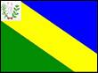

| Bandeira e Brasão de Armas |

|
| Origem do nome |
De origem indígena cujo significado é Broto D`Água,evidentemente por haver fartura de mananciais aquático em suas terras. |
| Padroeira |
Nossa Senhora da Abadia. |
| Legislação Ambiental Municipal |
Lei N° 695/2018, de 31 de agosto de 2018 - Altera a Lei Municipal n° 555/2011, que institui o Código Municipal de Meio Ambiente; cria o Fundo Municipal de Meio Ambiente - FMMA e dá outras providências. |
| Principais fontes de água |
- Poço Chico Ferro
- Poço Vila Operária
- Poço Dr. Roberto
- Poço Maria de Nuca
- Poço Caldeirão
- Poço Tonho da Mamona
- Poço Rasgão 09
- Nascente Boqueirão I
- Nascente Boqueirão II
- Nascente Alto do Bonito
- Nascente da Mata
|
| Unidade de Conservação |
Área de Preservação Ambiental Broto D'água. |
| Principais fontes de energia renovável |
Energia Solar. |
| Empreendimentos minerários |
- Thor Mineração
- Pedra Bahia Mineração
- Gransena Mineração
- Rocha Bahia Mineração
- GM Mineração (Azul Macaúbas)
- Tempest Mineração
- Shekinah Mineração
- Jeribá Mineração
- Via Stone Mineração
|
| Plano de Saneamento Básico |
Em elaboração. |
| Projetos de reciclagem |
Não possui. |
| Descarte de lixo eletrônico |
Não possui. |
| Maiores impactos ambientais |
- A exploração minerária pela empresa Penarroya S.A, que criou a Companhia Brasileira de Chumbo (Cobrac) para atuar no Brasil. A extração de Chumbo (Pb) e Zinco (Zn) ao longo de 33 anos de exploração trouxe consequências desastrosas, como fontes de metais tóxicos em forma de bacia de rejeito, galerias da mina subterrânea desativadas, mina à céu aberto, pilha de estéril da lavra à céu aberto, situadas no entorno da zona urbana, maquinários abandonados. O material pertencente à bacia de rejeito está disposto à céu aberto, totalizando um volume de aproximadamente 6.000.000 toneladas, composto principalmente por chumbo, zinco, prata, bário, cobre, cromo, níquel, arsênio e cádmio, com teores para Pb e Zn acima de 10.000 ppm. Ela está a aproximadamente 40 metros de bairros residenciais e a 1.000 metros do centro da cidade, sendo a instalação desta bacia de rejeito incompatível com normatizações técnicas ou cumprimento de legislação ambiental vigente.
- O descarte inadequado de resíduos sólidos
- A ausência de esgotamento sanitário e tratamento dos resíduos
- A ocorrência de queimadas ilegais, principalmente em períodos de estiagem
|
| Conselhos municipais |
- Conselho Municipal de Meio Ambiente
- Conselho Municipal de Desenvolvimento Sustentável
- Conselho Municipal de Saúde
- Conselho Municipal de Assistência Social
- Conselho Municipal de Educação
|
| Referências |
- DALTRO, R. R. Impactos ambientais nos recursos hídricos por metais tóxicos: o caso do município de Boquira, no semiárido baiano. 2017, 132 f. Mestrado em Geologia Ambiental, Hidrogeologia e Recursos Hídricos. Universidade Federal da Bahia. Salvador, Bahia. Disponível em: https://repositorio.ufba.br/handle/ri/25904. Acesso em: 10 set. 2023.
- MARTINS, E. H. C.; MONTEIRO, E. M. S. Riscos à saúde da população causados pela contaminação por chumbo no município de Boquira, Bahia. Revista Baiana de Saúde Pública. v. 40, 114-131 p. 2016. Disponível em: https://rbsp.sesab.ba.gov.br/index.php/rbsp/article/view/2697. Acesso em: 24 jul. 2023
- BOQUIRA. 2018. Lei N° 695/2018, de 31 de agosto de 2018 - Altera a Lei Municipal n° 555/2011, que institui o Código Municipal de Meio Ambiente; cria o Fundo Municipal de Meio Ambiente - FMMA e dá outras providências. Publicado no Diário Oficial do Município em 03/09/2018.
- BOQUIRA. Prefeitura Municipal de Boquira. Diário Oficial. Disponível em: https://www.boquira.ba.gov.br/site/DiarioOficial. Acesso em: 22 jul. 2023.
|